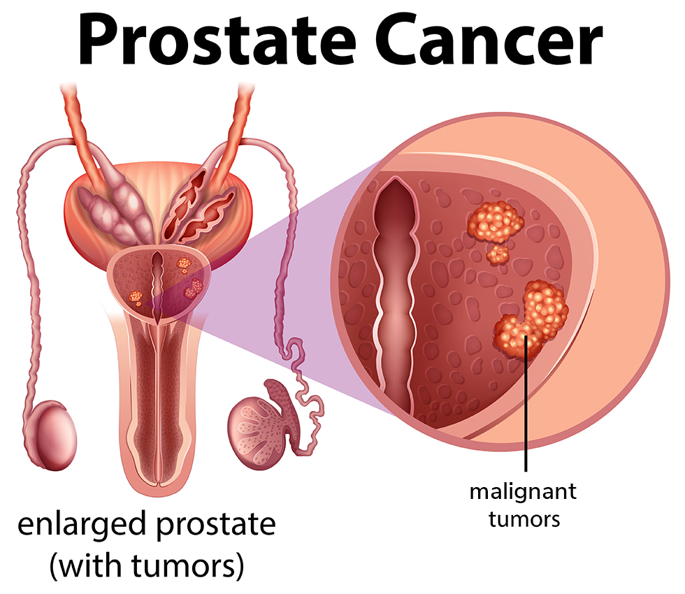

What is the Prostate?
Understanding the basic anatomy and biology of the prostate gland is the foundation of protecting your reproductive and overall health.
The Walnut Gland
The prostate is a small gland, roughly the size of a walnut, found exclusively in men. It sits deep inside the pelvis, located directly underneath the bladder and surrounding the upper section of the urethra.
Reproductive Function
Its primary job is to secrete a specialized fluid that blends with sperm to create semen. This fluid protects sperm, boosts their motility, and provides an alkaline shield to ensure their survival.
How Cancer Develops
Prostate cancer begins when cells inside this gland undergo abnormal genetic changes and multiply uncontrollably. It is predominantly a slow-growing cancer that rarely shows obvious outer warning signs early on.
Anatomy Visualization
Cross-section view showing the prostate's vital position around the urinary tract.

⚠️ The Aging Factor & Silent Growth
As Kiwi men age, the prostate naturally undergoes a non-cancerous enlargement called Benign Prostatic Hyperplasia (BPH). While BPH itself is harmless, it squeezes the urethra in the exact same way a growing tumor might.
Because early-stage prostate cancer develops silently without physical pain, you cannot rely on feeling sick to discover it. This is why regular clinical screenings remain absolutely critical.
Protecting the
Men of Aotearoa.
Leading the way in prostate cancer awareness, support, and early detection across New Zealand.
Symptoms & Warning Signs
Early prostate cancer often has no symptoms at all. Do not wait for pain or warning signs to see your GP. Regular checks are vital.
Early Urinary Changes
As the tumor grows, it may press against the urethra, causing gradual alterations:
- Increased Frequency: Needing to urinate much more often, especially waking up multiple times during the night (Nocturia).
- Hesitancy & Flow: Difficulty starting to urinate or experiencing a weak, slow, or interrupted stream.
- Urgency: Sudden, intense urges to urinate that are hard to delay, occasionally leading to minor leakage.
- Incomplete Emptying: A persistent feeling that your bladder isn't completely empty even immediately after urinating.
Advanced Physical Signs
If the cancer spreads outside the prostate gland or invades surrounding tissues, it can cause severe signs:
- Haematuria: Finding visible blood in your urine or semen, which requires urgent medical investigation.
- Erectile Dysfunction: Sudden or progressive difficulty achieving or maintaining an erection, or painful ejaculation.
- Unexplained Weight Loss: Dropping weight rapidly without changes to your diet or exercise regime.
- Deep Chronic Pain: Persistent, dull aches or stiffness in the lower back, hips, upper thighs, or pelvic floor region.
Metastatic Symptoms
Signs that indicate the condition may have advanced and reached the bones or distant parts of the body:
- Severe Bone Pain: Intense, localized bone pain that doesn't subside, commonly in the spine or ribs.
- Limb Weakness: Numbness or profound weakness in the legs or feet, often caused by spinal cord compression.
- Chronic Fatigue: Feeling completely exhausted and drained of energy all the time, unrelated to lack of sleep.
Screening & Detection Methods
Early detection saves Kiwi lives. Understanding the different clinical tools used by doctors helps demystify the screening process.
1. The PSA Blood Test
The Prostate-Specific Antigen (PSA) test measures the level of a specific protein in your blood. Elevated levels can be a primary indicator of prostate abnormalities, including inflammation, enlargement, or cancer.
2. Digital Rectal Exam (DRE)
A quick physical examination where a GP feels the surface of the prostate gland through the rectum. The doctor checks for unusual hard spots, lumps, asymmetry, or changes in the overall size of the gland.
3. mpMRI Scan
Multi-parametric MRI creates high-definition 3D images of the prostate. If your PSA is high, New Zealand specialists use this non-invasive scan to look for suspicious areas before recommending further invasive tests.
4. Prostate Biopsy
The definitive method to diagnose prostate cancer. Small tissue samples are collected using thin needles under ultrasound guidance. These cells are analysed under a microscope to calculate the exact Gleason Score.
📍 Find a Testing Centre
Select your local region to locate an approved screening clinic or find support networks near you in New Zealand.
📅 When should I get checked?
If you are over 50, you should talk to your GP about having a regular PSA check. However, if you have a family history of prostate or breast cancer, you need to begin discussing screening with your doctor from age 40.
Development Stages
Staging determines how far the cancer has developed and helps doctors design the most effective management path using the clinical TNM system.
Stage 1: Early Localised (T1)
The cancer is small, completely confined within the prostate gland, and cannot be felt during a DRE or seen on standard imaging scans. It is typically discovered incidentally during procedures for benign enlargement or via a routine PSA blood test. The cells are usually low-grade.
Stage 2: Established Localised (T2)
The tumor is larger and can now be felt as a hard lump during a physical digital rectal exam or mapped via an MRI scan. However, it remains entirely contained within the fibrous capsule of the prostate gland. It has not yet breached the outer borders or reached neighboring structures.
Stage 3: Locally Advanced (T3)
The cancer cells have broken through the outer capsule layer of the prostate gland. The disease may have spread into the seminal vesicles—the glands next to the prostate that produce fluid for semen—or into the immediate surrounding connective tissues, but has not reached distant organs.
Stage 4: Advanced or Metastatic (T4 / N+ / M+)
This is advanced prostate cancer. The malignant cells have travelled through the lymphatic channels or bloodstream to other areas of the body. Most commonly, it metastasizes to nearby pelvic lymph nodes, distant bones (such as the spine, pelvis, or ribs), or major organs like the liver and lungs.
Treatments & Care in New Zealand
Treatment paths are personalized based on age, lifestyle, health status, and cancer grade. Options range from active monitoring to advanced therapies.
Active Surveillance
For low-risk, slow-growing cancers. Instead of rushing into immediate surgery or radiation, patients are monitored closely with regular PSA blood tests, repeated digital exams, and periodic biopsies. This effectively delays or avoids potential side effects like incontinence and erectile dysfunction while keeping the patient safe.
Radical Prostatectomy
The complete surgical removal of the prostate gland, surrounding tissues, and some nearby lymph nodes. In New Zealand major centers, this is increasingly performed via **Robot-Assisted Laparoscopic Surgery (da Vinci)**, which allows high-precision navigation, smaller skin incisions, less blood loss, and faster recovery times.
Radiation Therapies
High-energy beams are target-focused to eliminate or shrink the tumor. This includes **External Beam Radiation (EBRT)** delivered from a machine outside the body, or **Brachytherapy**, an internal approach where tiny radioactive seeds are permanently or temporarily implanted directly into the prostate tissue under anesthetic.
Androgen Deprivation Therapy (ADT)
Prostate cancer cells rely heavily on male hormones (testosterone) to grow. ADT, or hormone therapy, utilizes regular injections or medications to stop your body from producing testosterone, or blocks it from reaching the cancer cells. It is commonly used alongside radiation or to manage advanced stages.
Chemotherapy & Immunotherapy
When the cancer has spread to distant bones or organs and no longer responds to standard hormone blockades, specialized chemotherapy drugs are administered intravenously. These systematic medicines circulate throughout the entire body to target rapidly dividing cancer cells, slow growth, and alleviate pain.
🎮 Blue-Quest Challenge
Test your knowledge! Right answers add 10 points, wrong answers deduct 1 point.
Loading question...
🤝 Support & Community
You are not alone. Access community networks, expert guidance, and personal stories to help navigate your prostate health journey in New Zealand.
🌐 NZ Support Networks
Connecting with others who understand what you are going through can make a world of difference. Explore these vital resources and official websites:
-
Prostate Cancer Foundation NZ: Offers free nation-wide support groups, welfare grants, and peer support.
Visit Official Website → -
Cancer Society New Zealand: Provides practical assistance, counseling, and free transport to local cancer treatments in Canterbury.
Visit Official Website → -
Movember NZ: The leading charity changing the face of men's health, funding global prostate cancer research and local initiatives.
Visit Movember NZ →
📞 Need to talk to someone right now?
Call the Prostate Cancer Support Helpline free at 0800 477 678.
📩 Subscribe to Our Newsletter
Stay informed. Subscribe to receive updates, recent prostate cancer research, and support event leaflets.